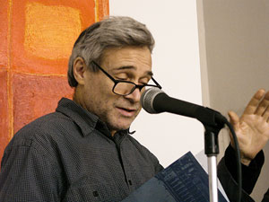

Jester-Knight
Literature
Film
Music
Visual Art
Tributes
Submissions
Links
Contact
Steve Dalachinsky

Photograph by Marilyn Kaggen
Biography
Steve Dalachinsky was born after the last Big War & has managed to survive lots of little wars. His poems have appeared extensively in journals on & off line including, Big Bridge, Milk, Unlikely Stories, Xpressed, Evergreen Review, Long Shot, Alpha Beat Soup, Xtant, Blue Beat Jacket, Unbearable Assemblage Magazines, NY Arts Magazine, 88, Lost and Found Times, plus such anthologies as Beat Indeed, The Haiku Moment and the esteemed Outlaw Bible of American Poetry.
He has written liner notes for the CDs of many artists including Anthony Braxton,
James "Blood" Ulmer, Rashied Ali, Roy Campbell, Matthew Shipp, Roscoe Mitchell & many others. His 1999 CD, Incomplete Direction (Knitting Factory Records), a collection of his poetry read in collaboration with various musicians, such as William Parker, Matthew Shipp, Daniel Carter, Sabir Mateen, Susie Ibarra, Thurston Moore (SonicYouth), Vernon Reid (Living Colour) has garnered much praise.
His most recent chapbooks include Trial and Error in Paris (Loudmouth Collective - 2003), Lautreamont's Laments (Furniture Press - 2005), In Glorious Black and White (Ugly Duckling Presse - 2005), St. Lucie (King of Mice Press - 2005 ), Are We Not MEN & Fake Book (2 books of collage - 8 Page Press - 2005). Dream Book (Avantcular Press - 2005).
His books include A Superintendent's Eyes (Hozomeen Press, 2000) and The Final Nite (complete notes from a Charles Gayle Notebook - Ugly Duckling Presse - 2005).
His latest CD is Phenomena of Interference, a collaboration with pianist Matthew Shipp (Hopscotch Records, 2005)
He has read his work extensively in the N.Y. area and throughout the U.S. and Europe.
Click below for Steve's work
Fool's Gold (.pdf) NEW!!!
Image 1 (.jpg) NEW!!!
Image 2 (.jpg) NEW!!!
Erotic Poems (.pdf)
Evan/Stone Poems Part 1 (.pdf)
Misc Poems 3 (.pdf)
doormats placemats 2 matts (.pdf)
Tongues of Light & Darkness (the Boy King) (.pdf)
The Sheaves (.pdf)
Misc Poems (.pdf)
Misc Poems 2 (.pdf)